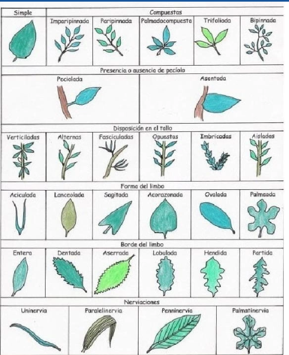
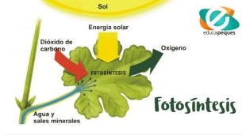

Las plantas y sus partes
Las hojas
La hoja es una de las partes más importantes de las plantas. Contienen el pigmento verde llamado clorofila, que absorbe la energía de la luz solar y la usa para convertir el dióxido de carbono en oxígeno. También absorben y difunden agua y gases. Son muy variadas en forma, color y tamaño
Partes de la hoja
Hay muchos tipos de hojas que permiten distinguir unas plantas de otras, pero, esencialmente, toda hoja está formada por las partes siguientes:
- El limbo: es la parte ancha de la hoja. Tiene dos caras: el haz que es la parte de arriba de la hoja cuando está en la planta, y el envés que es la que queda hacia abajo.
- Los nervios: son una especie de arrugas o canales que recorren el limbo de la hoja. En realidad, son los vasos conductores que discurren a lo largo de su superficie.
- El pecíolo: es la parte de la hoja que une el limbo al tallo. Tiene forma de rabito y, a través de él, discurren los vasos conductores. Hay algunas hojas que no tienen pecíolo. Estas hojas sin peciolo se llaman sésiles. Existen muchos tipos de hojas, que se diferencian por su forma: lobulada, ovalada, palmeada, triangular, etc.

Tipos de hojas
Según el limbo
- Hojas simples son las que tienen un limbo sin partir.
- Hojas compuestas son aquellas en las que el limbo está dividido en fragmentos que llegan al nervio principal.
Según la forma del limbo
- Hoja elíptica es la que tiene forma de elipse.
- Hoja lanceolada es la que tiene forma de lanza.
- Hoja acicular es la que tiene forma de aguja.
- Hoja oval es la que tiene forma de huevo.
- Hoja acorazonada es la que tiene forma de corazón.
- Hoja lineal es la que es estrecha y alargada como una cinta.
Según el margen
- Hojas enteras son las que tienen el margen liso.
- Hojas onduladas son las que tienen pequeños entrantes como olas.
- Hojas dentadas son las que tienen el margen con pequeños dientes.
- Hojas aserradas son las que tienen los bordes como dientes de una sierra.
- Hojas lobuladas las que presentan entrantes y salientes redondeados.
Funcion de las hojas
Las hojas son unos órganos verdes que salen del tallo y que poseen funciones básicas para la planta, como son:
- Realizar la fotosíntesis: durante este proceso la materia inorgánica (CO2, agua y sales minerales) se transforma en materia orgánica (glúcidos, lípidos, proteínas) gracias a la energía luminosa del sol.
- Producir la transpiración: las hojas pierden agua en forma de vapor a través de los estomas.
- Realizar el intercambio gaseoso: a través de los estomas entra el oxígeno, necesario para la respiración celular, y el CO2 que se utiliza en la fotosíntesis. Ambos gases también salen a través de los estomas, el oxígeno producido en la fotosíntesis y el dióxido de carbono procedente de la respiración celular.
